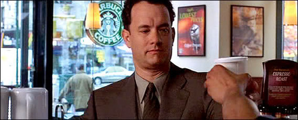
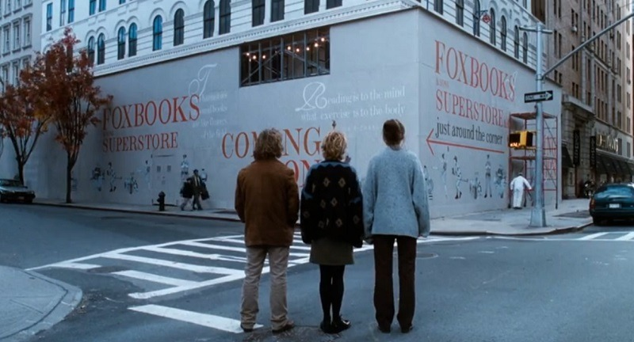
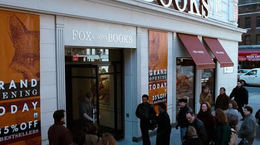

I'll say it. I'm something of a rom-com addict. In the last couple years I've developed a deep appreciation for these films, which indisputably take the crown as the ultimate escapist genre. Perhaps some of you are familiar with the name Nora Epron. Perhaps even more of you are familiar with her work which includes genre pillars; pantheon-worthy greats, like When Harry Met Sally, and Sleepless in Seattle.
But we're not here to talk about those movies. We're here to talk about a movie whose screenplay Ephron clearly, and could only have written during a 3-week period sometime in June, 1997. You've Got Mail is a looking glass into a very specific period of recent history, a time when using the internet was still gimicky, and Meg Ryan's small independent kids bookstore is more worried about the big-box Barnes and Noble parody, run by Tom Hanks, then they are about a certain Jeff's 4 year old internet startup. Oh, and everybody loves Starbucks.
Tom Hanks as a java hound
Seattle, however, is not the setting of You've Got Mail. An idyllic New York City plays host to our protagonists of late 90s yore. Being a recent HBO Max subscriber, mooching off my family of course, You've Got Mail was a recent viewing of mine. Among the seasonal NYC backdrop, the fascinating glimpse into the psyche of 1998, and Meg Ryan's incomparable rom-com star quality, what struck me most on my inaugural watch was the exceptional graphic design, and for a movie no less.
The title sequence starts us off with an interesting, non-rom-com-esque low poly computer animated Manhattan that certainly doesn't do the job of getting you in the mood to watch a 'will they won't they' love story. But, when Barnes and Noble -er- I mean Fox Books starts renovating the block for their new mega store, I was dumbfounded. Wow, that wall looks like it could have been designed yesterday by a Brooklyn based lunch spot that makes more money selling Eckmannpsych clad merch online than it does actually serving food.
Thats a great orange
My awe continued as more Fox Books branding was revealed. The sans-serif typeface is exemplary of understated modern, all caps, engraving inspired design. The store interior continues with this subtle design mastery. And the fox illustration's nostalgic touch makes me realize that corporate bookstore brand identity hasn't actually ever changed. It is a testament to the production designers that they went this hard on such an overlooked part of most films (this isn't Grand Budapest Hotel or anything). The end credits cap off the film in Gill Sans which brought me back to my iMovie editing days.
Aside from its exceptional graphic design, this movie made me think about my own childhood. Children's literature carries an intense nostalgic weight, images from those books are seared into my head. A recent Ezra Koenig instagram story brought me to a page with images from books like Rainbow Fish, Strega Nona and Arnold Lobel's Mouse Soup, a book that hadn't once crossed my mind since I last read it. You've Got Mail did a something similar, with its children's book store filled with nostalgia inducing titles. Did the cultural wave I grew up in spiritually start in the 'science museum era' otherwise known as the late 90s? Am I reading too much into this? Probably so.